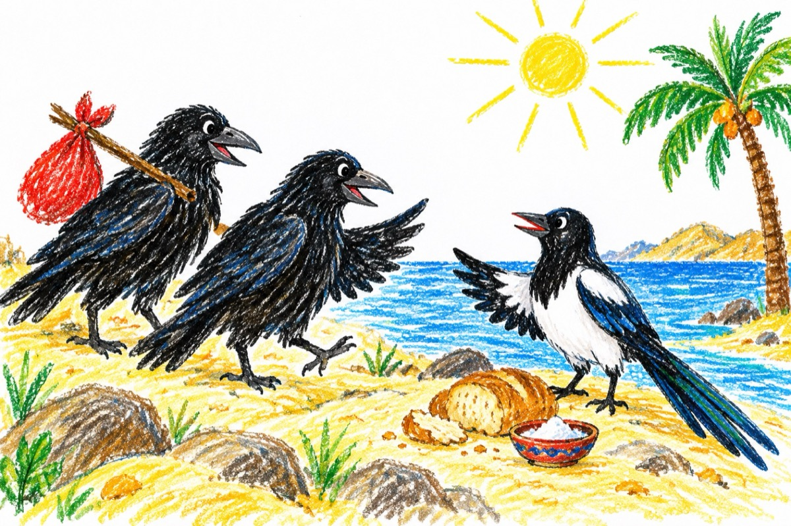

Spre Africa
Aprigi, curioși din fire,
O cioară și un cioroi
S-au gândit că ar fi bine
Ca să plece amândoi -
În vacanță undeva
Pe un țărm din Africa!
Coborând, de sus, din nori
Văzute așa de negre
Lumea neștiind că-s ciori
A-nceput să protesteze
Nelăsând s-aterizeze
Dând cu pietre și cu bâte
Nicăieri să se așeze
Crezând că-s din iad - venite!
Până când o coțofană,
Dornică de anturaj
Le-a ieșit în față calmă
Și le-a spus cu mult curaj:
Că făpturile venite
Nu sunt diavoli, ci sunt ciori
Și-s sosite ca turiste,
Și-au culoarea ca și ei.
Să-i primească-n ospeție,
Să le dea pâine și sare
Să le poarte-n drumeție,
Cât e Africa de mare!
Și precum s-a întâmplat
Și se-ntâmpl-adeseori
Ele nu au mai plecat
Umplând Africa de ciori!
Vasile Groza